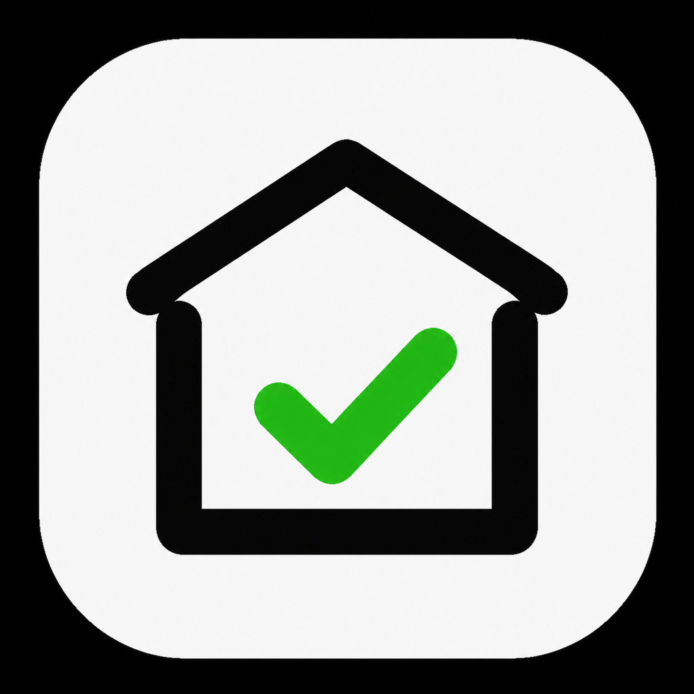

エアコン・カビ・排水口・換気扇など、放置すると困る家のメンテナンスを分かりやすく整理します。
暮らしの中でよく悩む家のメンテナンスを、目的別に分かりやすく整理しました。
冷房・暖房の効きが落ちる前に知っておきたい掃除・メンテのポイント。
黒カビや湿気対策をやさしく解説。家族が気持ちよく使える浴室へ。
油汚れに強い換気扇掃除と、キッチンまわりの衛生管理をサポート。
ぬめり・ニオイ対策に役立つ排水口掃除のタイミングと方法。
外まわりの掃除や網戸のお手入れで、快適な暮らし空間を保ちます。
いま多くの人が読んでいる、家メンテの定番記事をピックアップしました。
季節の切り替え前に押さえたい、お手入れのタイミングと簡単なチェック方法。
湿気や黒カビを防ぐために、今日から始められる手軽な習慣をご紹介。
ぬめりやにおいを防ぐ、排水口メンテの基本とおすすめアイテム。
家メンテを続けたい人のための、チェックしやすいタスク管理アプリ。
やるべき掃除や点検のタイミングを、わかりやすくまとめます。
家事の間に忘れがちな細かいポイントも、アプリでチェック。
商品リンクや業者依頼導線も、今後のアップデートで予定。